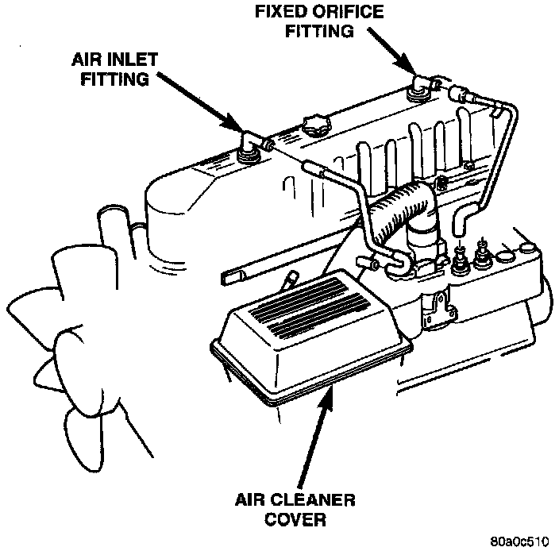

Positive Crankcase Ventilation: Description and Operation
CRANKCASE VENTILATION (CCV) SYSTEMAll engines are equipped with a Crankcase Ventilation (CCV) system. The CCV system performs the same function as a conventional PCV system, but does not use a vacuum controlled valve.
Fig. 10 CCV System - 4.0:

A molded vacuum tube connects a fitting on the intake manifold to a fixed orifice fitting of a calibrated size. This fitting meters the amount of crankcase vapors drawn out of the engine. The fixed orifice fitting is located on the top/rear of cylinder head (valve) cover (Fig. 10).
A fresh air supply hose is connected between a fitting on the air cleaner housing and the air inlet fitting at the top/front of cylinder head cover (Fig. 10).
When the engine is operating, fresh air enters the engine and mixes with crankcase vapors. Engine vacuum draws the vapor/air mixture through the fixed orifice and into the intake manifold. The vapors are then consumed during engine combustion.